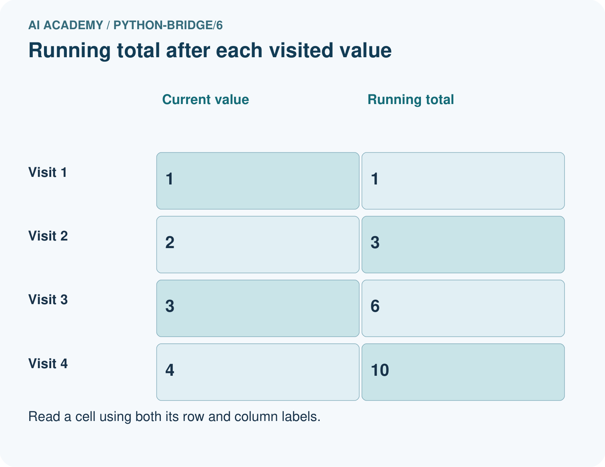
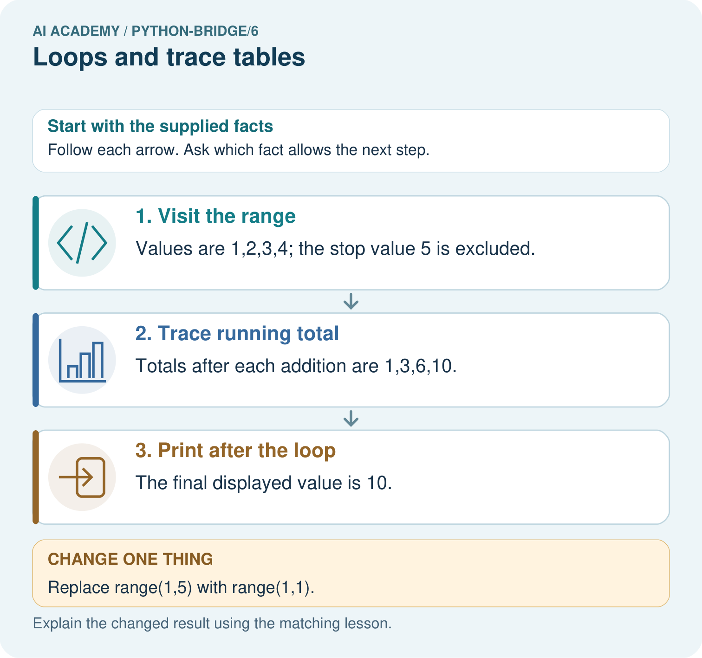
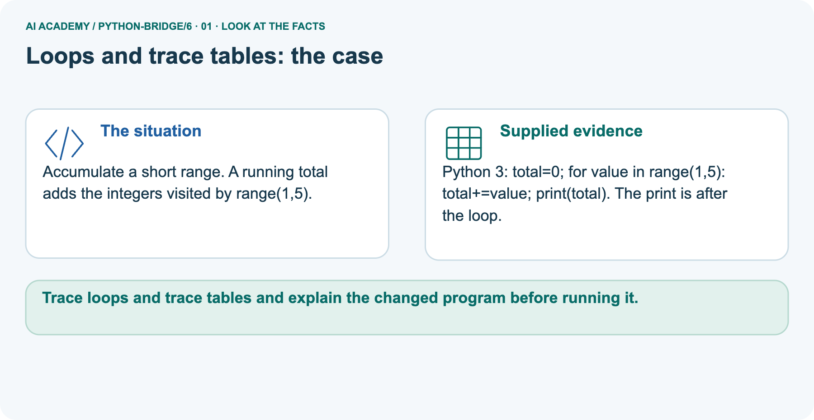
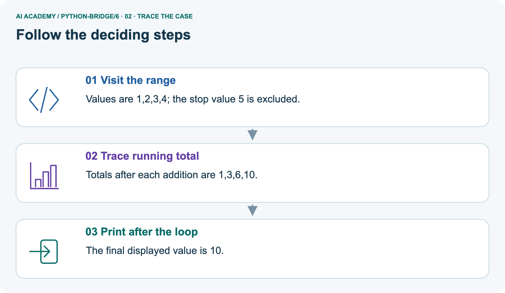
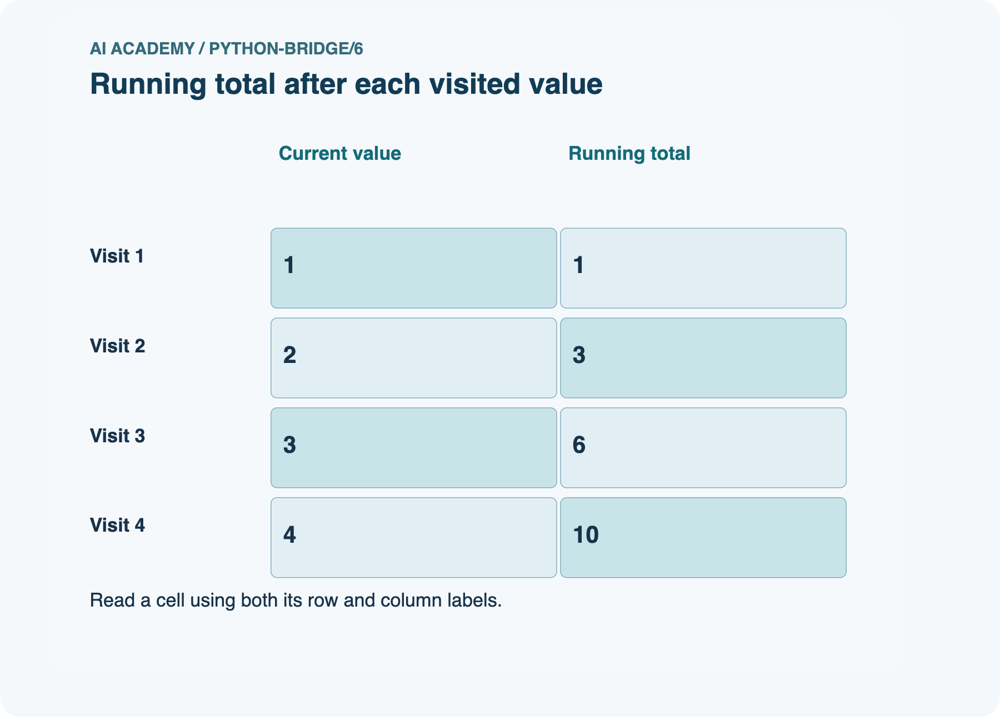
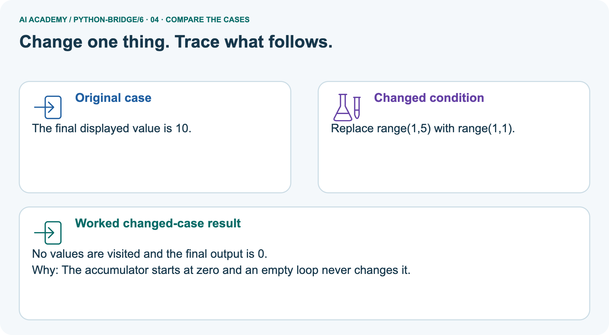
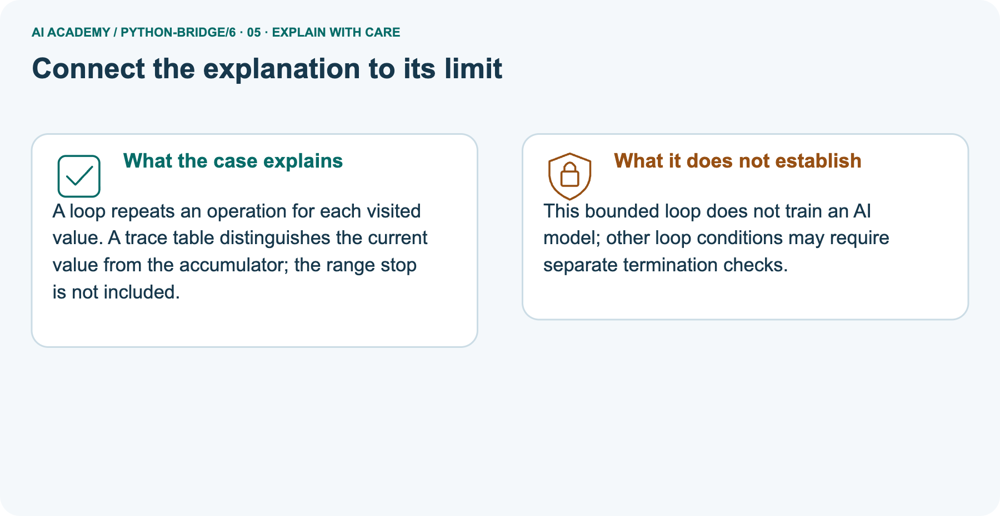
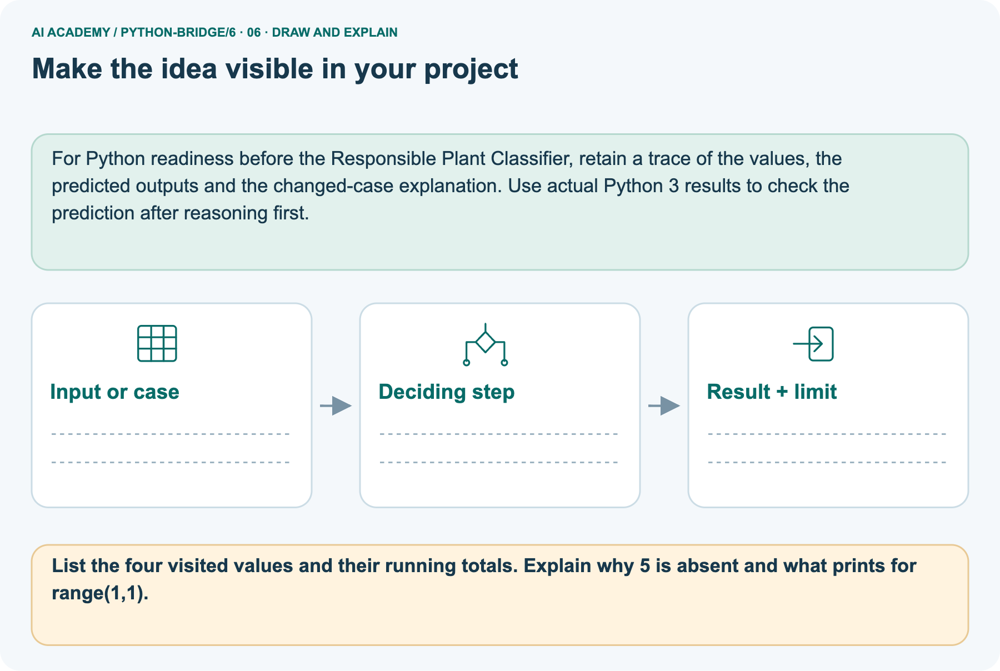

AI Academy · Python readiness bridge · Workbook
Loops and trace tables
Learn to understand, design, build, test and explain AI systems responsibly.
Project: Python readiness portfolio
THE CONNECTED WEEK
One connected loop-and-trace record.
Explain the accumulator, predict a range, diagnose a reset and state a domain limit.
Keep one habit: Keep exact range, current value, total before/after, output events and observed status together.
Main lesson · Section 1
Recall · Retrieve before notes
Keep the stated task, its own code/values and support record together.
Task and evidence record
Try the recall before opening notes. Then use a different colour or a labelled second line to correct your explanation.
Without opening the old lesson, explain one key idea from Branching and boundary tests. Give an example and a mistake that the idea helps you avoid.
Without opening the old lesson, explain one key idea from Expressions and operator order. Give an example and a mistake that the idea helps you avoid.
Branching and boundary tests
Expressions and operator order
Main lesson · Section 5
W1 · Explain the procedure
Keep the stated task, its own code/values and support record together.
Task and evidence record
Warm-up range(1,4): values 1,2,3 and totals 1,3,6; pictured range(1,5): 1,2,3,4 and totals 1,3,6,10. W2 range(2,5): 2,3,4 with totals 2,5,9. Stop excluded. Initialize total 0 before loop; empty range keeps 0. Resetting inside produces only current value in the sum; printing inside records each running total. Default step is positive 1; arbitrary input validation and learning are not implemented.
List the values supplied by range(2, 5) and explain why 5 is absent. How many times does its body run?
Main lesson · Section 6
W2 · Predict, trace and observe
Keep the stated task, its own code/values and support record together.
Task and evidence record
Warm-up range(1,4): values 1,2,3 and totals 1,3,6; pictured range(1,5): 1,2,3,4 and totals 1,3,6,10. W2 range(2,5): 2,3,4 with totals 2,5,9. Stop excluded. Initialize total 0 before loop; empty range keeps 0. Resetting inside produces only current value in the sum; printing inside records each running total. Default step is positive 1; arbitrary input validation and learning are not implemented.
Reference for this exercise: open this week’s student lesson, “Loops and trace tables”, at “See how it works” and “Follow a worked example”. Use the original worked values or code named in the question; the later pictorial case is a separate example. Keep this reference beside your workbook while practising.
Copy the worked script. Change the range to range(2, 5). Record turn, total before and total after each iteration. Predict the single output, then run and compare.
Main lesson · Section 7
W3 · Find the first error
Keep the stated task, its own code/values and support record together.
Task and evidence record
Warm-up range(1,4): values 1,2,3 and totals 1,3,6; pictured range(1,5): 1,2,3,4 and totals 1,3,6,10. W2 range(2,5): 2,3,4 with totals 2,5,9. Stop excluded. Initialize total 0 before loop; empty range keeps 0. Resetting inside produces only current value in the sum; printing inside records each running total. Default step is positive 1; arbitrary input validation and learning are not implemented.
Reference for this exercise: open this week’s student lesson, “Loops and trace tables”, at “Find and repair a mistake”. Use the original worked values or code named in the question; the later pictorial case is a separate example. Keep this reference beside your workbook while practising.
For the faulty script with range(1, 4), record total after each addition. Explain the wrong final output and remove only the faulty reset.
Main lesson · Section 9
W5 · State an honest limit
Keep the stated task, its own code/values and support record together.
Task and evidence record
Warm-up range(1,4): values 1,2,3 and totals 1,3,6; pictured range(1,5): 1,2,3,4 and totals 1,3,6,10. W2 range(2,5): 2,3,4 with totals 2,5,9. Stop excluded. Initialize total 0 before loop; empty range keeps 0. Resetting inside produces only current value in the sum; printing inside records each running total. Default step is positive 1; arbitrary input validation and learning are not implemented.
In your counter script, range(-2) performs no iterations. Does returning the initial 5 make negative rounds valid? Explain what the script checks and what it assumes.
Main lesson · Section 4
Try alone · Selected independent task
Keep the stated task, its own code/values and support record together.
Task and evidence record
List every value visited and each running total. Then predict the result for range(2,2).
Attempt this case before feedback. Record any help. Earlier examples below are further practice; a case already practised with feedback cannot establish fresh transfer.
Independent case: Count iterations and a stopping point
total = 0
for value in range(2, 6):
total = total + value
print(total)
Main lesson · Section 10
Project · Keep code and evidence
Keep the stated task, its own code/values and support record together.
Task and evidence record
Add a labelled loops and trace tables evidence sheet to Python readiness portfolio. Show how you can trace variable values before and after each loop iteration.
Use the supplied fictional case and keep its inputs, intermediate steps, calculation or prediction, and limitation. Connect this record to last week’s record; a matching answer without a trace is insufficient.
Main lesson · Section 11
Feedback · Repair and return
Keep the stated task, its own code/values and support record together.
Task and evidence record
Revisit this idea with your teacher after a delay. Familiarity is different from explaining and using it on a changed case.
| Evidence | My record |
|---|---|
| Worked alone / hint / model | |
| First step I repaired and why | |
| New case checked later; date and result | |
| What I can now explain without notes | |
| One remaining question |
Reference bank and extra practice
Choose the reference that helps your next step.
Reference · Supported W2 record
Reference · Section 2
Reference · Supported W2 record
Keep the stated task, its own code/values and support record together.
Task and evidence record
Use W2: Trace before running for Loops and trace tables. Record the answer once; the lesson and workbook refer to the same attempt.
| Given inputs | Procedure I chose | Middle steps | Result and check |
|---|---|---|---|
Extra practice · Individual reasoning check
Reference · Section 3
Extra practice · Individual reasoning check
Keep the stated task, its own code/values and support record together.
Task and evidence record
Use the worked case for Loops and trace tables. Proposed explanation: “The stop value is included”. Decide whether this explanation is supported. Point to the step or supplied fact that decides; explain your repair if needed.
Additional practice · Earlier W4 transfer
Reference · Section 8
Additional practice · Earlier W4 transfer
Keep the stated task, its own code/values and support record together.
Task and evidence record
A box starts with 5 counters. Each round adds 2 counters. Use rounds = 3, an initialized total and for turn in range(rounds). Print the final total once after the loop.
Trace the totals and predict fresh runs with rounds 0, 1 and 3. Assume rounds is a nonnegative integer.
Extra practice · Pictured case
Reference · Section 12
Extra practice · Pictured case
Keep the stated task, its own code/values and support record together.
Task and evidence record
Accumulate a short range. A running total adds the integers visited by range(1,5).
Python 3: total=0; for value in range(1,5): total+=value; print(total). The print is after the loop.
List the four visited values and their running totals. Explain why 5 is absent and what prints for range(1,1).
Support used: alone / hint / worked example. This record is practice evidence.
Project connection: For Python readiness before the Responsible Plant Classifier, retain a trace of the values, the predicted outputs and the changed-case explanation.
Use actual Python 3 results to check the prediction after reasoning first.






Reference · Project portfolio milestone
Reference · Section 13
Reference · Project portfolio milestone
Keep the stated task, its own code/values and support record together.
Task and evidence record
Project: Python readiness portfolio
Current milestone: Python readiness portfolio. Keep runnable code, predictions, actual outputs, one repaired error and an explanation of a function on changed inputs.
For Python readiness before the Responsible Plant Classifier, retain a trace of the values, the predicted outputs and the changed-case explanation. Use actual Python 3 results to check the prediction after reasoning first.
| Evidence to keep | My record |
|---|---|
| This week’s input and deciding step | |
| Prediction and actual result (or labelled paper trace) | |
| One change since the previous checkpoint and why | |
| One error or limit and the next test |
Extra practice · Predict, check and repair
Reference · Section 14
Extra practice · Predict, check and repair
Use only after an attempt; keep the reserved assessment separate.
First question and hint
Accumulate a short range. A running total adds the integers visited by range(1,5).
Which labelled step matches this detail? The final displayed value is 10.
1. Trace running total
2. Print after the loop
3. Visit the range
Hint if needed: Read the steps in the pictorial case. Match the supplied detail to the stage that performs or records it.
Practice 1: explain the deciding evidence
Check the first explanation
After your attempt, compare with the supported explanation: Print after the loop The final displayed value is 10. A loop repeats an operation for each visited value.
A trace table distinguishes the current value from the accumulator; the range stop is not included.
Changed-case question and hint
Changed-case practice: Replace range(1,5) with range(1,1). Which conclusion is supported by the supplied facts?
1. We can decide the result without examining the changed input or the procedure.
2. No values are visited and the final output is 0.
3. This one example guarantees correct results for every future input.
Hint if needed: Use the changed condition and the deciding step in the pictorial trace. The answer must say what follows from those facts.
Practice 2: explain the deciding evidence
Check the changed explanation
After your attempt, compare with the supported explanation: No values are visited and the final output is 0. The accumulator starts at zero and an empty loop never changes it.
Repair and keep the record
Review Branching and boundary tests (python-bridge/5). Goal: Trace the selected branch in an if elif else chain. Short practice: Trace -2, 4 and 5 through the branches.
Explain why the negative check comes first and what label -2 gets if it is removed.. Return to this week and explain what you changed.
Review Expressions and operator order (python-bridge/3). Goal: Evaluate numeric expressions using Python’s grouping rules. Short practice: Trace the operation order in both expressions.
Identify which picture step changes with parentheses and predict both results when the multiplier becomes four.. Return to this week and explain what you changed.
The browser lab lets you edit the supported Python examples already included in this lesson. Predict first, run, inspect the actual output or error, change one input, then run again.
Keep code, predictions, actual results and a reasoned revision together. On paper, label your result as a trace rather than an execution.
Use Download completed work in the hosted lesson to export your answers, reflections, practice feedback and code-run evidence. Open the HTML copy to read or print it.
Drafts stay in this browser when storage is available; clear drafts on a shared device.
Earlier wording, alternatives and picture transcripts
Use this supported practice once, in the browser or on paper. Keep the reserved independent assessment for a separate first attempt before teacher feedback.
Repair a missing building block
Predict, run and debug
Keep your completed work
Reference · Six-picture response sheets
Reference · Section 15
Reference · Six-picture response sheets
Use the picture relevant to a current gap.
01. Loops and trace tables: the case



Accumulate a short range. A running total adds the integers visited by range(1,5). Supplied facts: Python 3: total=0; for value in range(1,5): total+=value; print(total). The print is after the loop.
Point to the given fact that matters most. Explain why it matters.
02. Follow the deciding steps



Visit the range: Values are 1,2,3,4; the stop value 5 is excluded. → Trace running total: Totals after each addition are 1,3,6,10. → Print after the loop: The final displayed value is 10.
Point to each numbered stage and explain which recorded input it uses.
03. Running total after each visited value



Running total after each visited value. Visit 1: Current value = 1, Running total = 1. Visit 2: Current value = 2, Running total = 3. Visit 3: Current value = 3, Running total = 6.
Visit 4: Current value = 4, Running total = 10.
Read the labels and values. Explain the relationship the model shows.
04. Change one thing. Trace what follows.



Original case: The final displayed value is 10. Changed condition: Replace range(1,5) with range(1,1). Expected result: No values are visited and the final output is 0.
Reason: The accumulator starts at zero and an empty loop never changes it.
Predict before checking the worked changed-case result. Name what changed and what the supplied facts allow you to conclude.
05. Connect the explanation to its limit



A loop repeats an operation for each visited value. A trace table distinguishes the current value from the accumulator; the range stop is not included.
Limit: This bounded loop does not train an AI model; other loop conditions may require separate termination checks.
Explain the case, then point to a limit on the claim.
06. Make the idea visible in your project



For Python readiness before the Responsible Plant Classifier, retain a trace of the values, the predicted outputs and the changed-case explanation. Use actual Python 3 results to check the prediction after reasoning first.
Draw your input, deciding step, result and limit. Supported question: List the four visited values and their running totals. Explain why 5 is absent and what prints for range(1,1).
Draw your project trace and justify the deciding step using evidence.